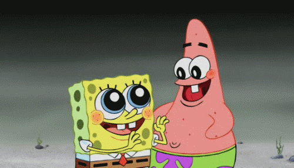

В первые дни мы познакомились с организационной составляющей нашего обучения в НИУ ВШЭ. Мы прослушали много информации про ресурсы Вышки на лекциях БЖД, познакомились с кураторами и менторами среди студентов. Мы получили студенческие билеты, пропуска (это была вынужденная мера, адскую очередь за пропуском я выстояла только ради того, чтобы валькирии на входе не напрягали свои связки, ругая меня).
В то же время мы знакомились между собой в группе: найти друг друга было не так сложно, ведь наша группа - единственные ребята в Школе Дизайна, которые не красят волосы в цвета химической истерики. Сложно было только запомнить имена: не каждый день встречаешь пару-тройку людей, родители которых - фанаты команд command-c + command v (без обид, мои комплексы по поводу имени должны выливаться во что-то забавное).
Начались занятия. Футурология впечатлила больше всего: никто в аудитории никогда не задумывался о том, что стикеры изобрели в каком-то там году (не задумывались точно так же, как и не запомнили цифры). Началась работа над проектом по проектированию: мы все принесли темы на выбор, а также начали изучать технические дисциплины, где нам показывали, как пользоваться программами.
Дела в группе шли хорошо: все стали больше общаться друг с другом, обсуждать внеучебную деятельность, личные интересы и прочее. Появилась даже надежда завести друзей:(